Hi there! Welcome to PEW’s home page. Here you’ll find information on us, epilepsy, and other sensory disorders as well as cool and supportive organizations.
But first, what is PEW? And who is it for? PEW is a browser extension with the intention of helping people with photosensitive epilepsy determine what content is and isn't safe to watch online. However, it’s also thought and made for anyone with a sensitivity for flashing lights, bright and vibrant colors, etc. Such as, anxiety, autism, migraines, ADHD, Tourettes, PTSD, and more.
Here are some NGOs (Non-governmental organizations) we got in contact with (or that we just found helpful) while making PEW. They helped us get a better understanding of what we could do and implement in this project to make the best it can be and actually useful to people with epilepsy.
Firstly, what’s epilepsy? Epilepsy is, in simple terms a brain disorder in which a person has repeated seizures over time. Seizures are episodes of uncontrolled and abnormal firing of brain cells that may cause changes in attention or behavior.
Who does it affect? How?
Hey there! My name is Carolina Sepulvida Borges, I’m seventeen. I go by any pronouns. I’m graduating from ORT Belgrano, Argentina this year with a technical baccalaureate with guidance in information and communication technologies
Who are we? 
Photosensitive Epilepsy warning
Hello, Jere here, Jeremias Sharovsky. I’m seventeen, eighteen this year. I go by they/them pronouns and I’m graduating from ORT Almagro, Argentina with a technical baccalaureate with guidance in information and mechatronics.
Hi! I’m Juan Ignacio Goñe. I’m seventeen. I go by he/him pronouns. I was the Proyect Manager on this proyect and a couple more this year. And I’m graduating from ORT Belgrano, Argentina with a technical baccalaureate with guidance in information and communication technologies
Why we made PEW?
The idea for PEW was born from a school project that we needed to do as part of our final year of school. We all wanted to do something that would benefit society in some way.
The only conditions that had to be met were: it had to be carried out throughout the school year and it had to be technology related. Almost halfway through the year we were given a talk about accessibility and other issues the school wanted us to aim for with our proyects. That's when we came up with this idea of creating software that would allow people with epilpsy to navigate the web safely and freely. We asked if there was something like this already and we disaappointed but not surprised when we were told that it hadn’t. That as when we decided we would do it ourselves.
You’re more than welcome to send us any feedback or maybe updates you’d like for us to implement. (Or anything really, we love cat pics)